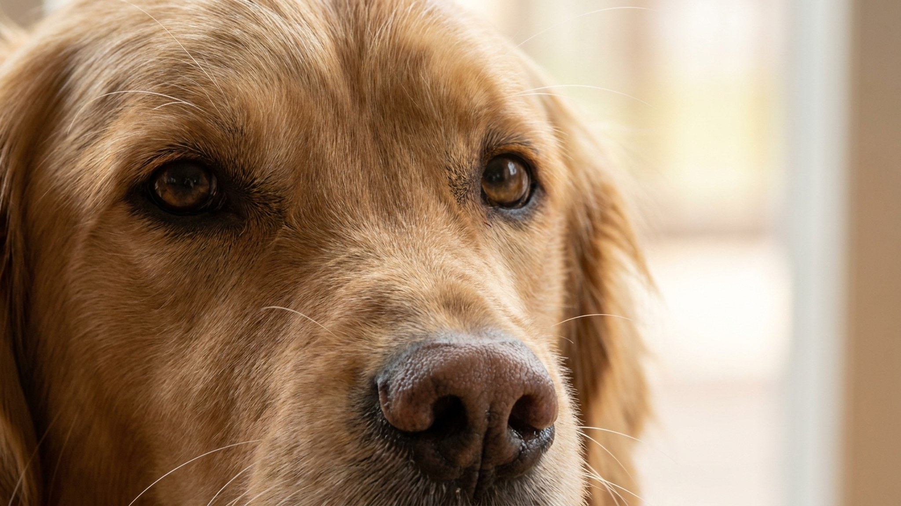

Вы говорите «хорошо!» — а питомец уже отвлёкся, и непонятно, за что именно его хвалят. Кликер решает эту проблему: щелчок звучит ровно в ту долю секунды, когда животное сделало нужное движение, и мозг мгновенно связывает действие с наградой. Метод работает и с собаками, и с кошками — даже пугливыми. Ниже — как начать сегодня же, без специальных знаний и дорогого инвентаря.
🐾 Застряли на этом этапе воспитания?
Опишите ситуацию в AnimaLife — получите разбор причины и пошаговый план на неделю под возраст вашего питомца. Бесплатно.
Получить план → Получить в MAX →
У вас iPhone? AnimaLife есть в App Store
Когда питомец осваивает новое действие, мозгу нужен чёткий сигнал: «именно это движение приносит еду». Голос не справляется — интонация меняется, слово «хорошо» звучит в десятках других ситуаций, реакция запаздывает на полсекунды. Кликер даёт три преимущества:
Кликер — это не волшебная палочка, а маркер. Он ничего не значит сам по себе, пока вы не зарядите его связью с едой.
Шаг 1. Зарядка кликера. Сядьте рядом с питомцем в спокойной обстановке. Нажмите на кликер — и сразу дайте маленький кусочек лакомства. Повторите 10–15 раз за одну сессию. Никаких команд, никакого поведения — просто звук и еда идут вместе. После 2–3 таких сессий щелчок сам по себе начнёт вызывать интерес: животное поняло, что за ним следует угощение.
Шаг 2. Ловля простого поведения. Выберите одно простейшее действие: кошка садится — кликнули и угостили. Собака опустила зад — кликнули и угостили. Не просите, не толкайте — просто ждите естественного движения и фиксируйте его щелчком. Животное начнёт повторять это действие намеренно: оно поняло, что именно оно приносит еду.
Шаг 3. Добавление команды. Когда животное стабильно повторяет действие 8 раз из 10 — добавьте слово или жест прямо перед движением: «Сидеть» → животное садится → клик → угощение. Команда прицепляется к уже понятому поведению, а не к пустому звуку.
Кликер-тренинг основан на принципах оперантного обусловливания — они одинаково работают у всех млекопитающих. Кошки обучаются через него ничуть не хуже собак: просто сессии должны быть ещё короче (2–3 минуты), а лакомство — особенно ценным именно для этой кошки.
Пугливые животные выигрывают от метода особенно заметно. Нет давления, нет принуждения, нет жёстких команд. Животное в любой момент может уйти — и именно поэтому часто остаётся и участвует. Страх не накапливается, а тренировка превращается в игру, которую питомец выбирает сам.
Начать можно с любым кликером за 100–200 рублей из зоомагазина. Некоторые используют ручку с кнопкой или щелчок языком — принцип тот же, если звук стабильный и короткий.
🐾 Разберите свой случай в AnimaLife
AI подскажет, что закрепляет нежелательное поведение и как переучить без наказаний. Ответ за минуту, круглосуточно и бесплатно.
Разобрать случай → Разобрать в MAX →
У вас iPhone? AnimaLife есть в App Store
🐾 Понравился разбор?
Подпишитесь на канал — каждый день разбираем по одному тревожному симптому у кошек и собак: что в пределах нормы, а когда пора к врачу. Подпишитесь, чтобы не пропустить разбор, который может спасти здоровье вашего питомца.
Материал носит информационный характер и не заменяет очную консультацию ветеринара.